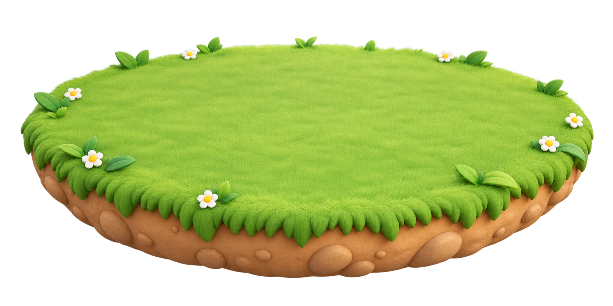
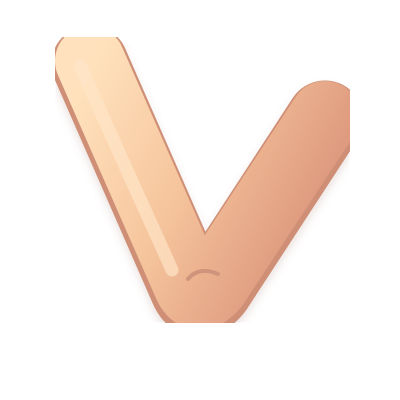

ꕤ
肘肘猪
云朵小岛
登录云存档
☀
白天
本机缓存
这只猪的肘击次数
0
所有猪累计
0
次
小粉
✎

×
×

+1
小岛在等一只猪
创建第一只猪 ＋
肘击
↘
点一下，肘一下
·
也可以按空格
×
PIGGY ISLAND
认识一只新猪
猪猪的名字
创建猪猪
和这只猪说再见？
再想想
删除猪猪
×
CLOUD SAVE
登录云存档
登录
创建账号
用户名
密码
确认密码
用户名不区分大小写。
登录并读取云存档
退出账号